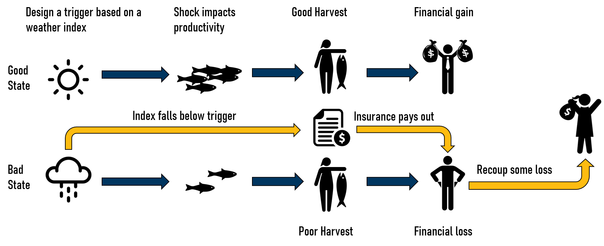

Behavorial Effects of Index Insurance in Fisheries
Occasional Egg Timer: Practice
Nathaniel Grimes
Bren School of Environmental Science & Management
Last updated: Jul 24, 2025
Fishing is a risky business
Storms, marine heatwaves, and other environmental variables directly impact fisher livelihoods
Fisher choices and management take steps to eliminate risk
Lack of financial tools to hedge against losses
Index Insurance has risen as a potential tool to alleviate income shocks in fisheries

Insurance moral hazards have led to environmental impacts in agriculture
Fisheries remain vulernable to overfishing
Research Questions
Will insurance increase or decrease harvest?
What factors lead insurance to increase or decrease harvest?
How much will insurance change harvest decisions?
Results Summary
Result 1: Index insurance will always increase harvest with standard fishing models
Result 2: The design on the contract matters. Contracts on extraction risks could increase or decrease, contracts on stock risks will always increase
Result 3: The absolute change towards overfishing is stronger with insurance than declines
Standard Stochastic Fishery Model
Stock abundance is often considered the primary stochastic variable for fishers in a single period
\[ \begin{align*} y&=\tilde{B}f(x) \\ y&=\hat{B}f(x)+\theta f(x) \end{align*} \]
\(\tilde{B}\) stochastic stock abundance
\(f(x)\) concave technology function
\(\hat{B}\) expected stock abundance
\(\theta\) shock to stock abundance with \(\mathbb{E}[\theta]=0\)
Index Insurance will raise risk increasing inputs \(\frac{\partial V(y)}{\partial x}>0\) [@Mahul2001]
\[ \begin{aligned} \frac{V(y)}{\partial x} &= \sigma^2_\theta\frac{\partial f(x)}{\partial x}>0 &\text{by concavity of $f(x)$} \end{aligned} \]
Result 1
Result 1: Index insurance will increase fishing effort if we apply traditional fishery models one-to-one
Intuition 1: Insurance protects against risk. The added risk of additional inputs is protected by insurance encouraging fishers fish harder and more
However, fishers are exposed to other risks and are quite adaptive to mitigating risk exposure
Flexible Stochastic Production Function
Other, independent risks impact the extraction of fishers, but do not necessarily impact expected harvest
\[ y=\hat{B}f(x)+\theta f(x)+\omega h(x) \]
\(h(x)\) risk effect function
\(\frac{\partial h(x)}{\partial x}\lessgtr0\)
\(\omega\) extraction shock with \(\mathbb{E}[\omega]=0\)
Fishers can mitigate that risk through the risk effects function \(h(x)\)
Now with two sources of risk and two margins to influence risk, unclear how insurance will change optimal input choice
We solve by solving the FOC of a maximization problem with insurance
\[ \begin{aligned} U\equiv\max_{x}\mathbb{E}[U]=\int^{\infty}_{-\infty}&\left[\overbrace{ \int^{\bar \omega}_{-\infty}j_{\omega,\theta}(\omega,\theta)u(\pi(x,\hat{B},\theta,\omega)+(1-J(\bar \omega))\gamma)d\omega}^{\text{Insurance pays out on bad $\omega$}} \right.\\ &\left.+\underbrace{\int^{\infty}_{\bar{\omega}}j_{\omega,\theta}(\omega,\theta) u(\pi(x,\hat{B}, \theta,\omega)-J(\bar \omega)\gamma)d \omega}_{\text{Fisher pays premium in good state}}\right] d\theta \end{aligned} \qquad(1)\]
\(u(\cdot)\) is concave utility
\(\pi\) fisher profits from \(y\)
\(j_{\omega,\theta}\) joint distribution of independent shocks
\(\gamma\) how much insurance pays out
\(\bar\omega\) trigger value for a contract
\(J(\bar\omega)\gamma\) is the premium
Apply IVT to analyze the direction of change in input use with insurance
\[ \frac{\partial x^{*}}{\partial \gamma}=-\frac{\frac{\partial U}{\partial x \partial \gamma}}{\frac{\partial^2 U}{\partial x^{2}}} \qquad(2)\]
Focus on numerator because of the sufficent conditions of a maximization problem:
\[ \begin{aligned} \frac{\partial U}{\partial x \partial \gamma}=\int^{\infty}_{-\infty}\left[ \int^{\bar \omega}_{-\infty}j_{\omega,\theta}(\omega,\theta)u''(\pi(x,\hat{B},\theta,\omega)+(1-J(\bar \omega))\gamma)\frac{\partial \pi}{\partial x}(x,\hat{B},\theta,\omega)(1-J(\bar \omega))d\omega\right.\\ +\left.\int^{\infty}_{\bar{\omega}}j_{\omega,\theta}(\omega,\theta) u''(\pi(x,\hat{B},\theta,\omega)-J(\bar \omega)\gamma)\frac{\partial \pi}{\partial x}(x,\hat{B},\theta,\omega)(-J(\bar \omega))d\omega\right] d\theta \end{aligned} \qquad(3)\]
Result 2: Contracts specified on extraction shocks, \(\omega\), could increase or decrease fisher harvest contingent on the risk effects (\(\frac{\partial h(x)}{\partial x}\)) of the input
Result 3: Contracts specified on biological stock shocks, \(\theta\), will always increase fisher harvest
Intution: Insurance contracts protect risk along their specific margins. Fishers use that channel to reduce or increase inputs. Because of the implicit risk increasing nature of \(f(x)\), \(\theta\) contracts lead to harvest increases.
Applying to Norwegian fishers shows potential magnitude of changes in harvest from insurance
Contract on \(\omega\)
Applying to Norwegian fishers shows potential magnitude of changes in harvest from insurance
Contract on \(\theta\)
Application of index insurance in fisheries needs to acknowledge moral hazards
- Most proposed contracts use biological traits or shocks
- Without considering moral hazards, insurance could unsustainably increase fishing pressures
Future Steps
How does insurance intersect with management?
Is IBI even feasible?